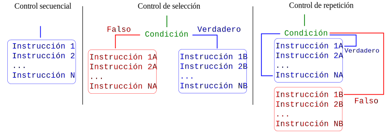

3. Estructuras de control¶
En un lenguaje de programación, las estructuras de control permiten modificar el flujo de la ejecución de un conjunto de instrucciones. Se pueden distinguir tres tipos básicos de control de flujo, a saber:
Control secuencial
Control de selección
Control de repetición

En el control secuencial las instrucciones se ejecutan de manera secuencial desde el inicio hasta el fin del programa. En el control de selección se tiene una condición que puede ser falsa o verdadera, dependiendo de esto se ejecutará uno u otro bloque de instrucciones. En el control de repetición, un bloque de instrucciones se ejecuta de manera repetitiva mientras una condición sea verdadera, en caso contrario el flujo de ejecución se pasará a otro conjunto de instrucciones.
3.1. Condicional if-elif-else¶
El condicional if-elif-else es una estructura de control de selección que sirve para tomar decisiones, basándose en la evaluación de condiciones y/o comparaciones, en el flujo del programa. La sintaxis más general para if-elif-else es:
if cond1:
# hacer algo
elif cond2:
# hacer otra cosa
...
elif condn:
# hacer algo más
else:
# hacer algo por default
Donde cond1, cond2, ... condn son valores lógicos que resultan de una comparación. Esta estructura se evalúa
secuencialmente hasta encontrar una condición que se cumpla, si ninguna lo hace, entonces se ejecuta la instrucción
colocada en el caso por default else.
Hay que tener especial cuidado con las indentaciones de los bloques de código, en Python las indentaciones no son opcionales, tienen un significado sintáctico. La mayoría de los editores de código de Python indentarán de manera automática la siguiente línea, cada vez que coloques los dos puntos al final de una línea.
En el siguiente fragmento de código se muestra un programa que verifica si el valor de a es mayor, menor o igual al valor de b.
a = 10
b = 30
if a > b:
print("a es mayor que b")
elif a < b:
print("a es menor que b")
else:
print("a es igual a b")
a es menor que b
Podemos observar que en este caso dado que el valor de a es menor b, entonces se ejecuta la instrucción contenida en el bloque del elif.
Es muy común que en algunos casos, por cuestiones inherentes a lo que se está programando, únicamente se decida entre dos posibilidades que son mutuamente excluyentes, en esos casos basta con una estructura if-else. Por ejemplo, el siguiente código determina si un número es par o impar (un número entero cualquiera o es par o es impar, no hay otra posibilidad).
n = 1001
if (-1)**(n) > 0:
print("El número es par")
else:
print("El número es impar")
El número es impar
La verificación que realiza el código anterior se basa en el hecho de que las potencias pares de -1 siempre serán 1, y las impares -1, es decir:
Supongamos ahora otro caso en donde las posibilidades son mutuamente excluyentes: en un curso la calificación mínima aprobatoria es de 70, la escala de calificación es de 0 a 100, ¿cómo podríamos implementar un código que decida si un alumno aprobó o reprobó la asignatura? Observa lo siguiente:
calificacion = 100
if calificacion >= 70:
print("Aprobado")
else:
print("No aprobado")
Aprobado
Sobre datos y validaciones
Usualmente un programa de computadora recibe datos de forma externa, es decir, alguien los proporciona de forma manual o se leen desde algún archivo de datos o provienen de algún dispositivo. Esto implica la posibilidad de que se reciban datos que no corresponderían con lo esperado, por ejemplo, en el caso del programa anterior, imagina ¿qué pasaría si un usuario inserta una calificación de 150? El programa seguiría funcionando y te imprimiría un mensaje de aprobado. Una manera de solventar esta situación sería adicionar una verificación de que el valor pasado esté en el rango de valores esperado, por ejemplo:
calificacion = 150
if calificacion < 0 or calificacion > 100:
print("La calificación debe estar en la escala de 0 a 100")
elif calificacion >= 70:
print("Aprobado")
else:
print("No aprobado")
3.2. Ciclo for¶
El bucle for es una estructura de control de repetición, en la cual se conocen
a priori el número de iteraciones a realizar. En lenguajes como C++ o Java, el ciclo for
necesita de una variable de ciclo de tipo entero que irá incrementándose en cada iteración. En Python, la cuestión es un poco diferente, el ciclo for recorre una secuencia y en la k-ésima iteración la variable de ciclo adopta el
valor del elemento en la k-ésima posición del iterable.
De manera general, la sintaxis de for es:
for var in secuencia:
# Hacer algo ...
Donde var es la variable de ciclo o variable de control y secuencia la secuencia de valores que deberá iterarse. Es necesario remarcar la importancia de los dos puntos al final de esta primera línea y en indentar el bloque de
código subsecuente que definirá el cuerpo del ciclo for.
Como primer ejemplo vamos a recorrer una lista de números y mostrarlos por consola:
numeros = [18,50,90,-20,100,80,37]
for n in numeros:
print(n)
18
50
90
-20
100
80
37
Observe que en cada iteración la variable de ciclo n adopta el valor de cada uno de los elementos de la
lista numeros.
Como ya se mencionó, en Python la variable de ciclo no necesariamente adopta valores numéricos enteros secuenciales, si no valores dentro de una secuencia. Esta secuencia podría ser también una cadena de caracteres, por ejemplo:
palabra = "Python"
for letra in palabra:
print(letra)
P
y
t
h
o
n
Dentro de un ciclo for podemos colocar cualquier otra instrucción de control de flujo. Un caso muy común es el de incluir otro ciclo for, algo que habitualmente se denota como ciclos anidados. Por ejemplo, supongamos que se requieren mostrar por consola todos los elementos de algunas listas contenidas dentro de otra lista principal, en ese caso se hace necesario primero iterar sobre la lista principal y enseguida hacerlo sobre las listas contenidas, por ejemplo:
matriz = [[-5,2,0], [9,5,6], [1,7,15]]
for fila in matriz:
for elemento in fila:
print(elemento)
-5
2
0
9
5
6
1
7
15
Con un ciclo for también podemos desempaquetar múltiples valores:
puntos = [(0,0), (1,0), (1,1), (0,1)]
for x,y in puntos:
print(f"x={x} y={y}")
x=0 y=0
x=1 y=0
x=1 y=1
x=0 y=1
Una forma equivalente de desempaquetar el conjunto de tuplas anteriores sería como sigue:
puntos = [(0,0), (1,0), (1,1), (0,1)]
for punto in puntos:
print(f"x={punto[0]} y={punto[1]}")
x=0 y=0
x=1 y=0
x=1 y=1
x=0 y=1
Observa la diferencia, la primera forma es un quizá un poco menos intuitiva pero más práctica y natural. En la primera se accede directamente con las variables de ciclo (x,y) a cada elemento de las tuplas que conforman la lista puntos, con la segunda se tiene que acceder mediante indexación a cada elemento.
3.3. Ciclo while¶
El ciclo while ejecuta un bloque de instrucciones mientras haya una condición que se cumpla. La sintaxis de while es:
while cond:
# hacer algo
Donde cond es un valor de tipo booleano que usualmente resulta de realizar una comparación; mientras cond sea un valor booleano True entonces el bloque de instrucciones contenidas en while se ejecutarán.
Veamos un ejemplo:
x = 1
while x < 5:
print(x)
x += 1
1
2
3
4
En el código anterior, inicialmente x tiene un valor de 1, el flujo del programa entra en el ciclo while, puesto que la condición se cumple (dado que en ese momento 1 < 5), posteriormente se ejecutan de manera repetitiva las instrucciones que están dentro del ciclo while, hasta que x = 5. La instrucción x += 1 suma 1 al valor de x en cada iteración.
Aunque es menos común y poco práctico, con while podríamos iterar, como con for, sobre una secuencia:
nombre = "Pablo"
k = 0
while k < len(nombre):
print(nombre[k])
k += 1
P
a
b
l
o
El ciclo while suele ser muy utilizado en métodos numéricos, donde el número de iteraciones requeridas puede establecerse por el usuario de manera directa o bien mediante la indicación de una tolerancia.
Por ejemplo, el método de Newton es un algoritmo que se utiliza para aproximar raíces de una función real. Este método se puede establecer como sigue:
Sea \(f\) una función real derivable, y sea r un cero real de \(f\). Si \(x_n\) es una aproximación a \(r\), entonces la siguiente aproximación \(x_{n+1}\) está dada por:
\[ x_{n+1} = x_n - \frac{ f(x_n) }{ f'(x_n) } \]Donde \( f' \) denota la derivada de \( f \). 1
Vamos a aproximar una de las raíces de la función \( f(x) = x^3 - 5x^2 + 3\), para ello necesitamos conocer también la derivada de esta función, derivando se tiene que \(f'(x) = 3x^2 - 10x\). Observe el siguiente código implementado:
f = lambda x: x**3 - 5*x**2 + 3 # función f
fp = lambda x: 3*x**2 - 10*x # derivada de la función f'
nit = 5 # número de iteraciones
k = 0 # contador de iteraciones
xn = 0.5 # valor inicial
while k < nit:
xnm1 = xn - ( f(xn) / fp(xn) )
xn = xnm1
k += 1
print(f"N = {k} | xn = {xn}")
N = 1 | xn = 0.9411764705882353
N = 2 | xn = 0.853031581485053
N = 3 | xn = 0.8502595519219142
N = 4 | xn = 0.850256587246385
N = 5 | xn = 0.8502565872429864
En f y fp se definen como funciones lambda las expresiones correspondientes a la función y su derivada, de manera respectiva. En la variable nit establecemos el número de iteraciones a realizar, la variable k funciona como un contador de iteraciones y en xn se guarda primeramente el valor inicial, y posteriormente, cada una de las aproximaciones realizadas.
Ahora veamos otro ejemplo, en donde se combina el uso de while con el condicional if-else.
from random import randint
print("¡Bienvenido a Adivina el Número!")
n = randint(1,10) # Genera un entero aleatorio en el intervalo [1,10]
k = 1 # número de intentos
while True:
x = int( input("Ingrese un entero entre 1 y 10: ") )
if x == n:
print(f"Has adivinado después de {k} intentos")
break
else:
print(f"{x} no es el número, intenta nuevamente\n")
k += 1
¡Bienvenido a Adivina el Número!
Ingrese un entero entre 1 y 10: 4
4 no es el número, intenta nuevamente
Ingrese un entero entre 1 y 10: 5
5 no es el número, intenta nuevamente
Ingrese un entero entre 1 y 10: 8
8 no es el número, intenta nuevamente
Ingrese un entero entre 1 y 10: 1
1 no es el número, intenta nuevamente
Ingrese un entero entre 1 y 10: 10
Has adivinado después de 5 intentos
El código anterior es un juego muy simple de adivinar un número entero entre 1 y 10 que la computadora genera de manera aleatoria mediante la función randint. Observa que el ciclo while, en principio, se ejecutará de forma indefinida, dado que la condición es la constante booleana True; en este caso para romper la ejecución iterativa se hace uso de la instrucción break, en conjunto con la sentencia de selección if-else, observa que si la condición del if se cumple (x == n) entonces el programa rompe el ciclo while con la instrucción break, en caso contrario simplemente se sigue ejecutando el juego.
3.4. Sentencia try-except¶
Cuando consideremos que puede ocurrir un error durante la ejecución de nuestro código, podemos utilizar un bloque try-except para manejar la excepción que podría surgir. Básicamente lo que hace es indicarle a Python que intente ejecutar algún código y le dice qué hacer en el caso de que el código genere un tipo particular de excepción.
La sintaxis básica de try-except es:
try:
# Código que puede generar una excepción
# Si ocurre una excepción aquí, el control se transfiere al bloque except
except ExcepciónX:
# Código que maneja la excepción de tipo ExcepciónX
Veamos el siguiente ejemplo:
a = int(input("Ingrese un número entero: "))
b = int(input("Ingrese otro número entero: "))
try:
c = a / b
except ZeroDivisionError:
print("Estás intentando dividir por cero")
Ingrese un número entero: 50
Ingrese otro número entero: 0
Estás intentando dividir por cero
Aquí el código solicita dos números enteros (a y b) al usuario, y luego en la variable c se intenta guardar el resultado de dividir a/b. Naturalmente, en el caso de que b=0, entonces Python lanzará una excepción del tipo ZeroDivisionError, así pues, en el bloque except deberemos colocar las instrucciones a ejecutar en el caso de que esto ocurra. Lógicamente esto podría ser desde mostrar un simple mensaje como en este caso, o bien, hacer las modificaciones pertinentes en las instrucciones.
Algunos de los tipos de errores o excepciones más comunes se describen brevemente a continuación:
SyntaxError: Ocurre cuando hay un error en la sintaxis del código, como un paréntesis o una comilla que falta.
IndentationError: Se produce cuando la indentación del código no es correcta.
TypeError: Se genera cuando se realiza una operación con un tipo de dato incompatible.
ValueError: Se puede producir cuando el valor de un argumento no es válido.
NameError: Ocurre cuando se intenta usar una variable que no ha sido definida previamente en el programa.
IndexError: Se produce cuando se intenta acceder a un elemento de una secuencia con un índice fuera de rango.
KeyError: Ocurre cuando se intenta acceder a una clave inexistente en un diccionario.
FileNotFoundError: Ocurre cuando se intenta abrir un archivo que no existe.
ImportError: Se produce cuando no se encuentra el módulo que se intenta importar.
OSError: Se genera cuando hay un error al realizar una operación del sistema operativo, como abrir un archivo.
Además de las excepciones incorporadas, siempre podemos definir nuestras propias excepciones para manejar situaciones específicas en los programas.
3.5. Ejercicios¶
Desarrolle un programa que calcule la suma de los enteros del 1 al 100, es decir: 1 + 2 + 3 + … + 99 + 100
Escriba un programa que reciba un entero positivo. Sí el número ingresado es múltiplo de 5 deberá imprimir en pantalla El número es múltiplo de 5, en cualquier otro caso deberá imprimir El número no es múltiplo de 5.
Escriba un programa que reciba como entrada una frase (un string) y determine cuántas veces aparece cada una de las vocales en esa frase. El valor de salida a mostrar debe ser un diccionario, se muestra enseguida un ejemplo:
# entrada
frase = "hola mundo"
# salida
{'a': 1, 'e': 0, 'i': 0, 'o': 2, 'u': 1}
Desarrolle un programa que reciba una lista de números enteros y calcule cuántos el porcentaje de números pares que contiene, redondee el porcentaje calculado.
# Ejemplos
x = [10,20,40,45,66,53,55] # porcentaje -> 57
x = [100,200,300] # porcentaje -> 100
x = [33,45,65,90,23,12,189] # porcentaje -> 29
¿Cuál es el error en el siguiente código? Descríbalo.
numeros = [10,20,30]
for x,y in numeros:
print(x)
Modifique el siguiente código para que se muestre en pantalla lo siguiente:
x
xx
xxx
xxxx
xxxxx
for x in range(1,3):
print(x * "o")
o
oo
Escriba un programa que muestre todos los números primos entre 1 y \(N\), donde \(N\) deberá ser un entero proporcionado por el usuario.
Desarrolle un programa que solicite al usuario tres enteros (a, b y N). El programa deberá crear una lista de N números linealmente equiespaciados entre a y b. Se muestran enseguida ejemplos de valores para a, b y N y la lista esperada.
a = 0
b = 10
N = 11
# lista esperada -> [0, 1.0, 2.0, 3.0, 4.0, 5.0, 6.0, 7.0, 8.0, 9.0, 10.0]
a = 5
b = 15
N = 3
# lista esperada -> [5, 10.0, 15.0]
a = 200
b = 500
N = 4
# lista esperada -> [200, 300.0, 400.0, 500.0]
En una plataforma de aprendizaje en línea, al finalizar cada semana se le envía un mensaje a los usuarios, dependiendo de la cantidad de puntos que hayan acumulado durante la semana:
Más de 10 000 puntos — Mensaje: Genial, lo has hecho fenomenal.
Entre 6 000 y 9 999 puntos — Mensaje: Excelente, eres muy dedicado.
Entre 3 000 y 5 999 puntos — Mensaje: Muy bien, sigue así de constante.
Entre 1 000 y 2 999 puntos — Mensaje: Bien, sigue aprendiendo.
Menos de 1 000 puntos — Mensaje: Es un buen comienzo, no pares.
Escriba un programa que, dada una cantidad de puntos acumulados por un usuario, muestre el mensaje correspondiente que se le debería enviar a dicho usuario.
Desarrolle un programa que, dados los tres lados de un triángulo, calcule y muestre tanto su área como su perímetro. A continuación, podemos observar un ejemplo de lo que se espera que el programa muestre en el caso de que el usuario ingrese valores de 3, 4 y 5 para cada uno de los lados.
Ingresa a: 3
Ingresa b: 4
Ingresa c: 5
El área del triángulo es 6.0
El perímetro del triángulo es 12.0
Escriba un programa que clasifique triángulos de acuerdo con las medidas de sus lados. El programa deberá mostrar si se trata de un triángulo equilátero, isósceles o escaleno.
Desarrolle un programa que calcule y muestre la suma de los primeros \(n\) términos de la serie:
El valor de \(n\) deberá ingresarlo el usuario. Por ejemplo, si el usuario ingresa \(n = 4\), se esperaría que el programa calcule la suma de los primeros 4 términos de la serie, es decir:
Desarrolle un programa que calcule y muestre la suma de los primeros \(n\) términos de la serie:
El valor de \(n\) deberá ingresarlo el usuario. Por ejemplo, si el usuario ingresa \(n = 5\), se esperaría que el programa calcule la suma de los primeros 5 términos de la serie, es decir:
$\( \frac{1}{1} + \frac{1}{2} + \frac{1}{3} + \frac{1}{4} + \frac{1}{5} \approx 2.28333\cdots \)$ \
Desarrolle un programa que cuente y muestre cuántos números múltiplos de 3 y mayores que 15 hay en una lista de números.
Escriba un programa que determine y muestre cuál es el mayor de tres números proporcionados por el usuario.
Escriba un programa que, dada una lista o tupla de números, determine cuáles son los valores máximos y mínimos. Evite hacer uso de las funciones min o max nativas de Python.
Desarrolle un programa que cuente y muestre cuántos números impares mayores que 10 hay en una lista de números.